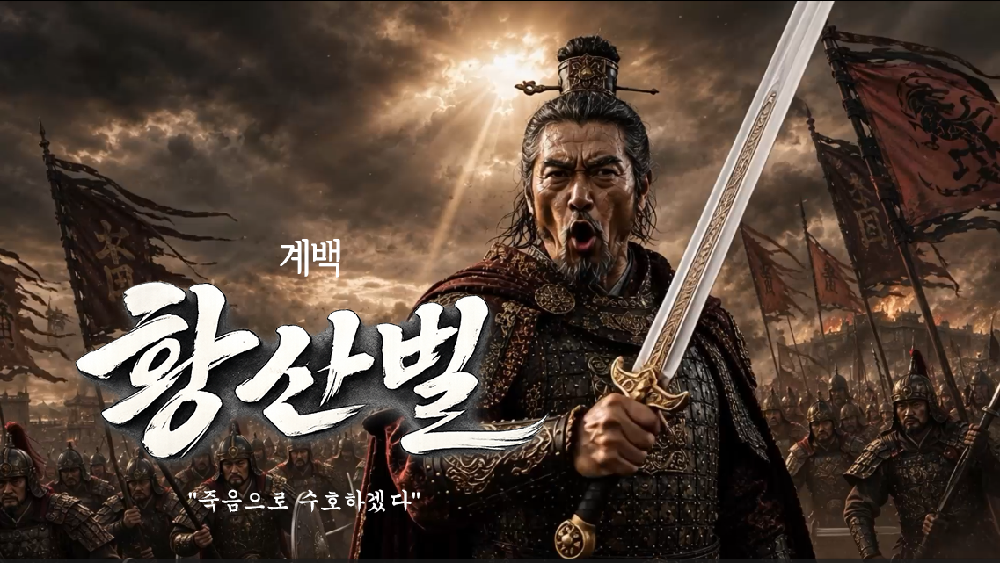
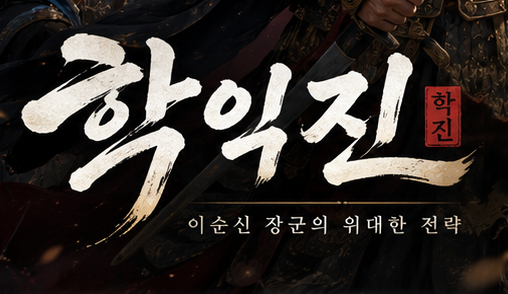
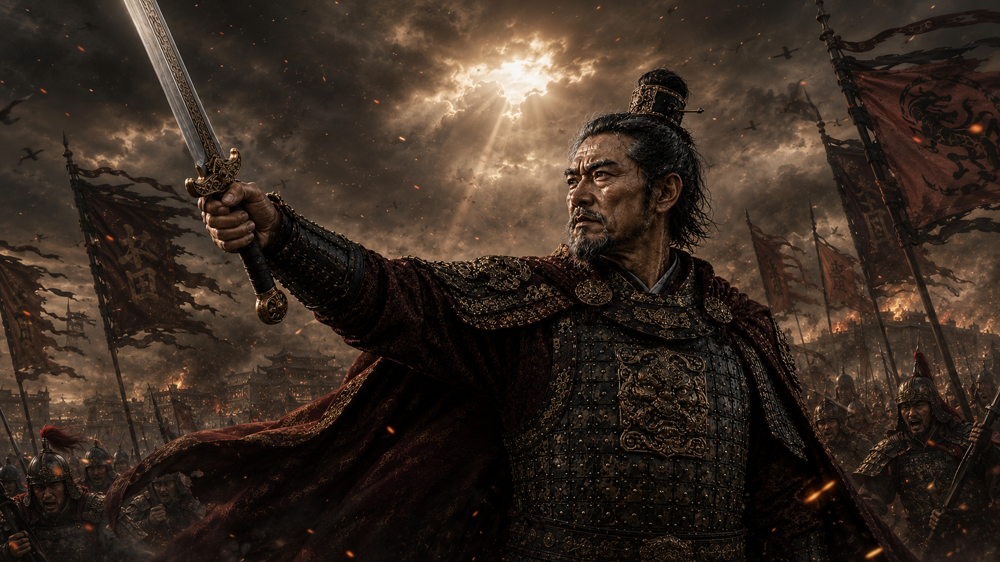

화면 속 전투가 진짜로 살아났다
컷인 표준화부터 다부대 AI까지, 시스템이 된 연출
2026년 07월 31일컷인, 얼마나 선명해야 하나
장수 컷인 작업을 시작하면서 가장 먼저 부딪힌 건 기술적인 문제였다. 척준경을 기준 샘플로 여러 화질을 테스트했는데, 1280×720·30fps 조건에서는 화면 깨짐 없이 갑옷·얼굴·칼·배경 디테일이 다 유지되고 색 번짐이나 컬러 블록 붕괴도 없었다. 반면 1080p는 재생 부담이 컸다 — 정확히는 1080p Theora 재생 자체의 부담인지, 그 변환본과 Godot 디코더 궁합 문제인지까지는 알 수 없었지만, 결과적으로 화면상 이득보다 재생 불안정 위험이 훨씬 컸다.
그래서 720p를 표준으로 확정했다. 최종 판정 기준은 하나였다 — 원본 대비 육안 화질이 유지되는가. 척준경의 "검왕돌파" 장면이 뜨는 순간을 확인했을 때, 방향이 맞다는 확신이 들었다. 여기서 장수명·고유기명·대사 한 줄·빠른 등장과 퇴장만 다듬으면 EASTWAR의 대표 연출이 될 수 있겠다는 게 이날의 결론이었다.
13명, 마지막 대사를 확정하다
한반도 MVP 출전 장수 13명의 타이틀 컷인과 4초짜리 영상을 전부 완성했다. 대사도 이렇게 확정했다.
| 장수 | 고유특기 | 대사 |
|---|---|---|
| 광개토대왕 | 영락대제 | "천하가 고구려의 말발굽 아래 놓이리라!" |
| 을지문덕 | 살수대첩 | "한 놈도 살아 돌아갈 길은 없다!" |
| 도림 | 흑백책략 | "의심은 칼보다 깊이 스미는 법." |
| 척준경 | 검왕돌파 | "내 앞을 막는 자, 목을 내놔라!" |
| 이순신 | 학익진 | "전 함대, 학익진을 펼쳐라!" |
| 정도전 | 개혁령 | "낡은 세상은 오늘로 끝이다!" |
| 권율 | 행주대첩 | "죽음으로 지켜내겠다!" |
| 계백 | 황산벌 | "이곳이 백제의 마지막 방패다!" |
| 흑치상지 | 백제부흥 | "일어서라, 백제여!" |
| 의자왕 | 삼천궁녀 | "춤춰라! 나의 백제, 하하하!" |
| 김춘추 | 나당연합 | "천하의 힘! 신라의 것이다!" |
| 김유신 | 삼한통일 | "삼한을 하나로 묶겠다!" |
| 장보고 | 청해진 | "이 바다의 길은 내가 지배한다!" |
대사는 코드에 하드코딩하지 않고 장수별 데이터로 관리하기로 했다. {"cheok_jun_gyeong": {"skill_id": "geomwang_dolpa", "quote": "내 앞을 막는 자, 목을 내놔라!"}} 같은 구조로 13명을 등록하면, 이후 장수를 추가하거나 대사를 수정하는 게 훨씬 쉬워진다.
하나를 완벽하게, 그다음 열셋으로
컷인을 완성하는 과정은 순서가 있었다. 먼저 액션 베이스 이미지가 있었고,

여기에 타이틀 폰트와 레이아웃을 테스트했다.

이 둘을 합쳐서 완성한 게 계백의 최종 컷인이다.

척준경 하나를 놓고 화질·폰트·위치·타이밍을 전부 잠근 다음, 나머지 12명으로 확장하는 순서로 갔다. 폰트는 장수명에 명조체(NotoSerifKR-Bold), 대사에는 고딕체를 쓰기로 했다. 대사 폰트 크기 29, 위치와 크기는 씬에 직접 지정된 transform을 기준으로 삼았다. 이 승인값들 — CutinStage 위치, 장수명 위치, 고유기 PNG 위치, 대사 위치, 등장·체류·퇴장 타이밍 — 은 이후 공통화 과정에서 시각적으로 절대 바뀌면 안 되는 기준선으로 커밋에 못박아뒀다.
이 기준이 잠긴 다음에야 척준경 전용 디버그 프리뷰를 공통 컷인 컴포넌트로 승격했다. 영상·장수명·고유특기 PNG·대사·위치·크기·타이밍을 하나의 재사용 씬으로 만들고, 장수별 데이터만 갈아 끼우면 되는 구조로 바꾼 것이다. 이 단계에서 척준경의 마스터 화면과 동작은 완전히 동일하게 유지하는 게 조건이었다.
이어서 잘못된 고유기 PNG 파일명 두 개(김유신 samguk→samhan, 계백 baekje_buheung→hwangsan_beol)를 바로잡고, 13명의 MP4를 승인된 720p Theora OGV로 변환하고, 13명 데이터를 단일 registry에 등록한 다음, 공통 컴포넌트로 13명이 순환하는 F6 프리뷰를 만들었다. 이 단계는 채코치·Work/Codex·김작 세 역할이 나뉘어 진행됐다 — 설계 확정과 결과 감사는 채코치, FFmpeg 변환·Godot 검증·커밋 같은 로컬 작업은 Work/Codex, 실제 F6 시각 QA와 최종 승인은 김작.
순환 프리뷰에서 광개토대왕 한 명만 따로 확인이 필요했다. 대사 폭이 504px로 공통 authored 폭 396px보다 길어서, Godot가 최소 폭을 자동 확장해 한 줄은 유지했지만 다른 장수보다 유난히 커 보이거나 타이틀·인물과 충돌하지 않는지 육안으로 봐야 했다. 나머지 12명은 수치상 공통 범위 안에 들어왔다.
폰트도 라이선스를 확인해야 한다
컷인에 쓴 Noto Serif KR은 상업용 게임에 써도 되는 폰트인지 미리 확인했다. 공식 배포본은 SIL Open Font License 1.1(OFL)이고, 이 라이선스는 게임에 폰트를 번들·임베드해서 상업적으로 배포하는 걸 허용한다. 다만 두 가지 조건이 있다 — 폰트 파일만 따로 판매하면 안 되고, 게임에 포함해 배포할 때는 저작권 고지와 OFL 라이선스 사본을 함께 넣어야 한다.
공식 GitHub 배포 페이지(notofonts/noto-cjk)에서 한국어 서브셋인 Noto Serif KR을 받아서 assets/fonts/noto_serif_kr/에 Bold·SemiBold 두 폰트와 OFL.txt를 함께 저장소에 넣었고, 프로젝트 루트에 THIRD_PARTY_NOTICES.md로 저작권 고지도 별도 문서화했다. Godot가 이 폰트를 게임 리소스로 가져와서 빌드 시 실행 파일/PCK 안에 함께 패키징하기 때문에, 유저가 폰트를 따로 설치할 필요는 없다.
예쁜 화면에서, 진짜 게임 시스템으로
컷인 자산과 공통 구조가 완성된 다음이 진짜 핵심이었다. 여기까지는 "보여주기용 프리뷰"였고, 이제는 실제 전투 흐름 안에 끼워 넣어야 했다. 잘못 연결하면 이런 문제가 생길 수 있다는 걸 미리 정리해뒀다 — 고유기 효과가 컷인보다 먼저 터지는 것, 컷인 재생 중에 플레이어가 다른 행동을 누르는 것, AI 턴이 멈추거나 두 번 진행되는 것, 기세가 중복 차감되는 것, 검증 실패인데 컷인이 재생되는 것, 컷인이 끝나도 전투가 재개되지 않는 것, 연속 발동 때 컷인이 겹치는 것.
그래서 원칙을 하나로 고정했다.
고유기 실행 조건 검증 완료 → 실행 커밋 → 기세 1회 차감 → 전투 흐름 잠금 → 컷인 재생 → 컷인 종료 신호 → 기존 고유기 효과 처리 계속 → 전투 흐름 잠금 해제
컷인은 고유기 계산의 원인이 아니라, 확정된 실행을 잠시 연출하는 비동기 단계여야 한다는 게 핵심이다. 그리고 취소나 대상 오류, 검증 실패 상황에서는 컷인이 절대 나오면 안 된다 — 유효 실행이 확정된 순간에만 재생해야 한다. 플레이어용과 AI용 컷인 코드를 따로 만들지 않고, 둘 다 play_unique_skill_cutin(hero_id, skill_id)라는 같은 함수를 타도록 설계했다. 연결 이후엔 자기강화형·단일대상형·광역형·회피/면역/일부 효과 실패·연속 고유기까지 플레이어와 AI 양쪽에서 QA하기로 계획을 세웠다.
그 사이 잡은 두 가지 버그
컷인 작업과 나란히, 다른 두 가지 문제도 잡았다.
주둔 무장 초상화: 사비에 주둔한 장수 목록에서 의자왕·계백·흑치상지·김춘추·장보고 다섯 명의 초상화가 정상 이미지 대신 물음표(?) placeholder로 표시되는 문제가 있었다. 김유신만 정상이었다. 목록·이름·능력치는 다 정상 표시되는데 초상화 조회만 실패하는 상황이라, 이미지 파일을 새로 만드는 게 아니라 전투 결과에서 월드맵 주둔 무장으로 복귀하는 과정의 hero ID·payload·portrait lookup 일치성을 복구하는 방향으로 고쳤다.
고유기 효과 한글화: 39명 고유기의 화면 표시 문구를 전수검사했다. 실전에서 확인된 영어 노출은 장보고·광개토대왕·의자왕 세 명이었지만, 이 세 명만 고치는 게 아니라 고유기 보유 장수 39명 전원을 검사 대상으로 잡았다. 발동 알림, 효과 이름, 버프·디버프 이름, 상태이상 이름, 피해·회복·방어 효과 문구, 턴 지속 문구, 전투 로그, 머리 위 효과 표시, 툴팁까지 전부 확인했고, 내부 ID와 사용자 표시 문자열을 분리하는 방식으로 해결해서 플레이어와 AI가 같은 formatter를 쓰게 만들었다. 결과적으로 영문 UI 노출 0건, 전투 로그까지 한글화 확인, 스크린샷에서 잡힌 GDScript 경고 5건도 함께 제거했다.
적 한 명만 반복 행동하던 진짜 큰 버그
가장 체감이 컸던 건 따로 있었다. 아군 1 대 적 4 상황에서, 적이 한 명 행동하고 나면 무조건 아군 턴으로 돌아가버리는 버그가 있었다. 나머지 세 명은 아예 행동 기회를 못 받는 상황이었던 것.
이걸 두 단계로 나눠서 고쳤다. 먼저 모든 적 행동 종료 지점을 공통 helper로 통일하고, 미행동 적이 남아 있으면 같은 적 턴을 계속 진행하도록 만들었다 — 살아 있는 적 전원이 행동을 마친 뒤에만 아군 턴으로 복귀하고, 양 진영 전원이 행동한 뒤에만 새 라운드가 시작되게 했다. 이 단계(T06-11A)가 F5 QA로 확실히 PASS된 다음에야, 기존에 있던 접근·포위 시스템(destination/engagement reservation)이 다부대 상황에서 실제로 작동하는지 검증하는 두 번째 단계(T06-11B)로 넘어갔다.
여기서 중요한 발견이 하나 있었다. 새로운 포위 AI를 만든 게 아니라, 원래 있던 시스템을 막고 있던 턴 오케스트레이션 버그를 뚫었을 뿐이라는 것. 그러자 예상대로 기존 접근 로직만으로도 적 셋이 동시에 달려드는 장면이 나왔다. 동일 표적을 복수의 적이 공유할 수 있게 하고, 목적지·교전 셀 중복은 방지하고, 측면 1.15배·후방 1.30배 배율은 기존 수치를 그대로 유지한 채로 검증까지 마쳤다.
두 단계 모두 F5 최종 PASS로 잠겼다. 이제 전투에서 숫자 우위가 실제로 체감된다 — 적이 정면에만 몰리지 않고 여러 방향에서 접근한다.
앞으로
컷인 시스템은 시각 QA까지 끝났고, 다음은 실제 전투 발동 연결과 플레이어·AI 통합 QA가 남았다. 여기까지 끝나면 컷인은 정말로 예쁜 프리뷰 화면이 아니라, EASTWAR 전투의 실제 일부가 된다.